python content
______________U N I T __ 1______________
-------lab # 1---------
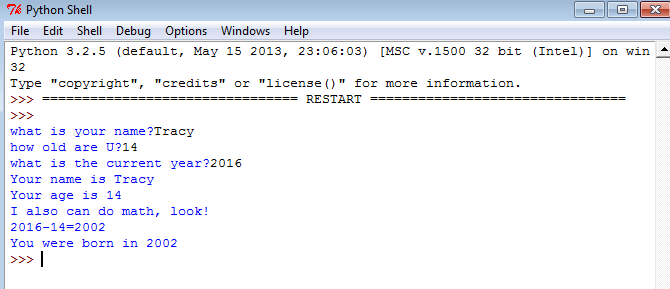
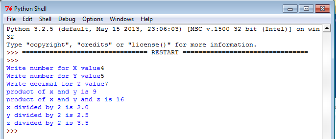
Description:
We used phyton to Create math problems solver.
Concepts Learned:
we used + - = * to make it do a mathematic problems.
we used str() and int() so it could know that this is a number.
we used a lot of inputs
------lab # 2--------
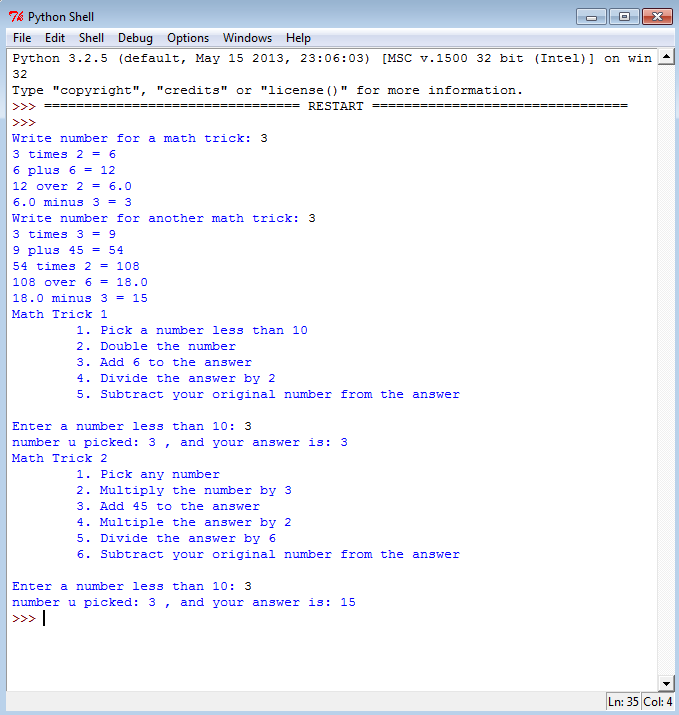
Description:
We used phyton to make a "magic trick".
Concepts Learned:
we used "import", that means that the lab file will take information from another file too.
we used inputs again.
we used commands to tell the file what to do with the input number.
------lab # 3--------
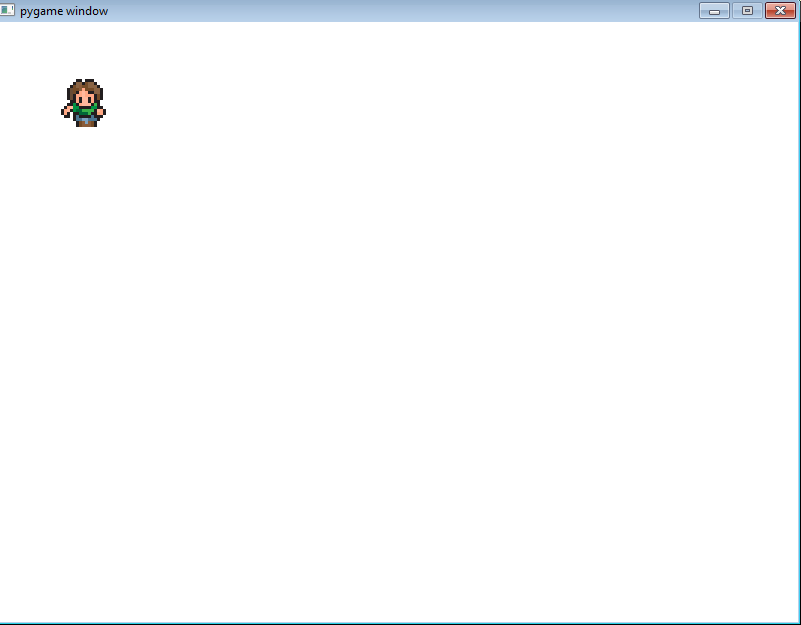
Description:
We used phyton to make a guy move on screen when the keyboard pressed.
Concepts Learned:
We created a class called "Person".
In the class, we told the person that it has x and y (place on screen).
We used used import to let the runner file know that there's a class called person in Person file.
we draw a screen( pygame.init() ,screen = pygame.display.set_mode((1000,600)) ), and put the person in it guy= person(50,50).
in the (50,50), it's means the place it will be on screen, 50 y 50 x.
we told it that when one of the arrows (for example- right arrow), it will move to the right.
______________U N I T ___ 2_______________
------- lab # 1 -------
Description:
We created a person that can move on screen, but it cant get out of the screen.
Concepts Learned:
We used import.
When we created the guy's movement, we tolf it that it can move just if the x and y are in the screen.
-------lab # 2---------
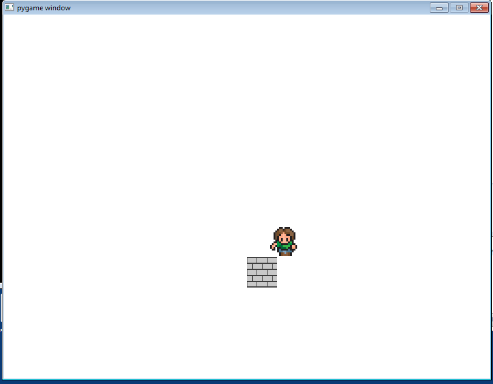
Description:
We created a person that can move on screen, but it cant touch the block.
Concepts Learned:
we used the "colide" method, that tells the file when the person and the wall colides.
We used import, because we had a lab runner file ( creating the screen),and a preson file (creating the person).
-------lab # 3---------
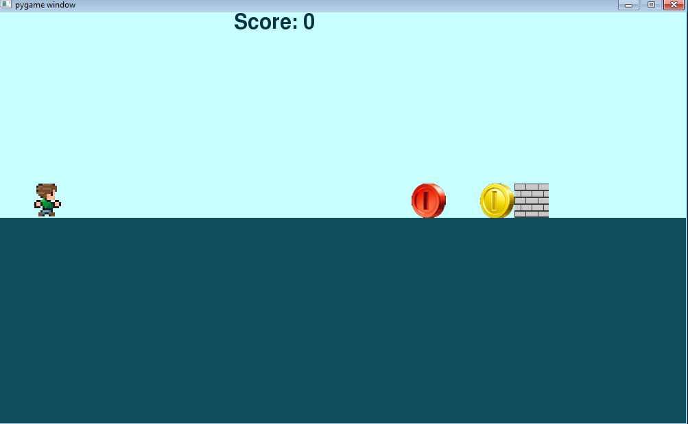
Description:
We created a game. Person run, if he get coin , added 3 point. If it touches wall, game ended. If it touch red coin, 5 points will be substract.
Concepts Learned:
we used the "colide" method (for the colliding of wall-person/coin-person/red coin-person).
We used import (we add a lot of files- coin, brick, person, line runner).
We make the guy "jump".
we made the wall, coin and red coin move towards the guy.
we made "score".
The speed of the wall will be faster each time it passes the person and goes back to the beggining.
______________U N I T ___ 3_______________
-------lab---------
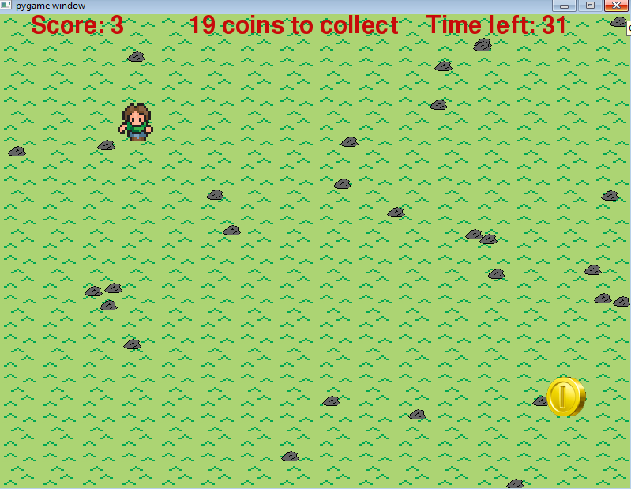
Description:
We created a game. The coin appeare in random places, each time the guy touches it the score goes up and the coin go to another random place. You have 40 secondes to collect 20 coins. If you make it, it will tell you that you are "winner" and press 3 to start again. if you lose it will tell you "you lost" and press 2 to try again.
Concepts Learned:
we used the "colide" method (for the colliding of coin-person).
We used import (we add a lot of files- coin, brick, person, line runner).
After the guy collide with point, we used random x and random y that the coin will appear there.
We created a timer, that will keep track of time and will set the gameEnd if the time is up.
we made "score" (when the guy collide with the coin.
I made something that will keep track of number of coins that the person collect. After you collect the whole 20 coins you win.
______________U N I T ___ 4_______________
-------lab---------
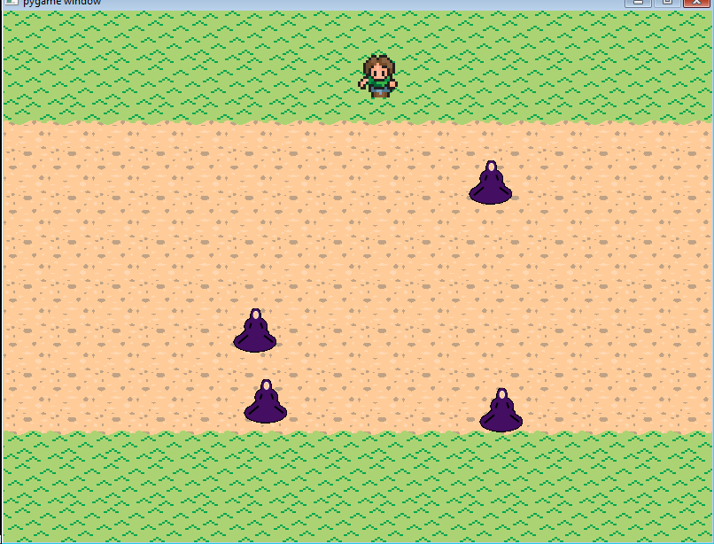
Description:
We created a game. The guy appeare in the upper screen. There are "aliens" that when the guy touches it the game end. If the guy can move past the aliens so it wins the game.
Concepts Learned:
we used the "colide" method (for the colliding of alien-person).
We used import (Person, enemy, enemies).
After the guy collide with enemy, wThe game end.
We created something that will keep track of number of aliens on the screen.
We created list of 5 enemies that will appear each time its touches the wall.
______________Project_______________
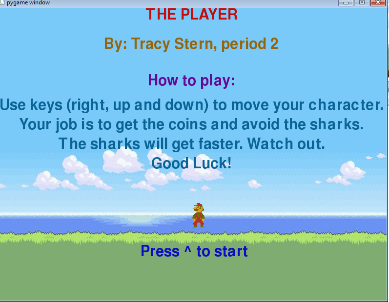
Description:
I created a game where you need to avoid sharks and collect coins. You use keys to move.
Concepts Learned:
we used the "colide" method (for the colliding of shark-person and coin-person).
We used import (Person, enemy, enemies).
We used lists for creating sprites for the person and for controlling the sharks.
I created couple screens for this, and a "dialog"
I added time and score and the guy is slowly moving and sinking because its underwater.
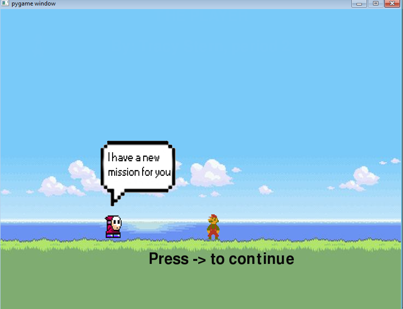
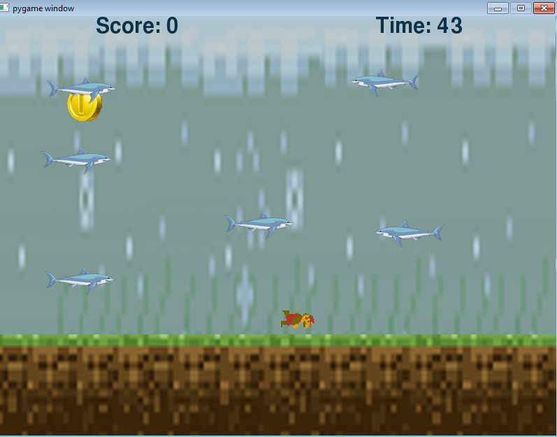